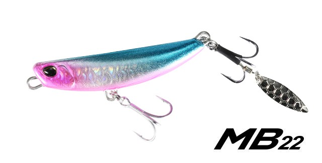
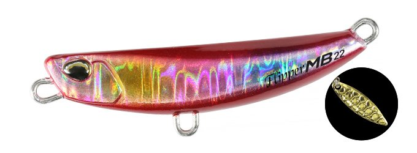
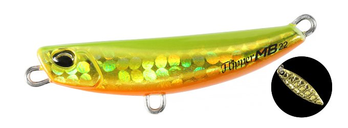
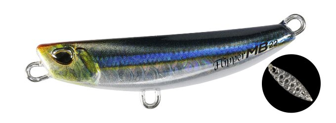
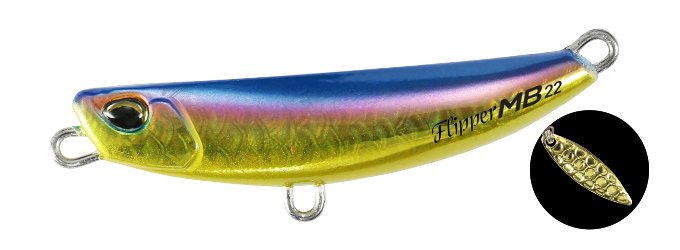
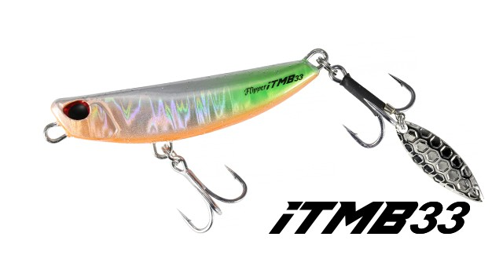
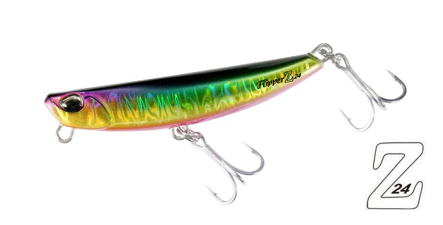
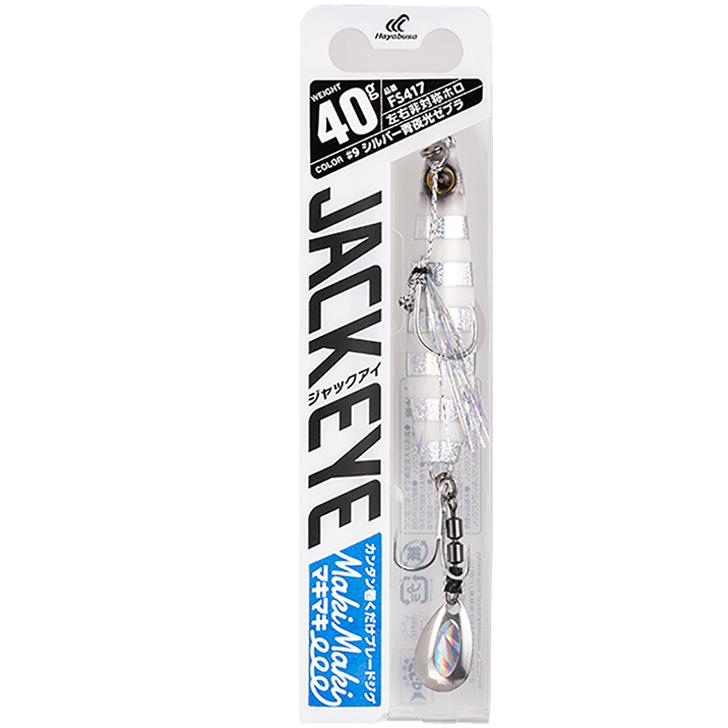

フリッパーMB22
（Beach Walker Flipper MB22）
フリッパーMB22（Beach Walker Flipper MB22）はDUO（デュオ）のブレード付きメタルジグです。
ヒラメゲームを牽引するビーチウォーカーシリーズのフリッパーに、ブレードフリッパーという新展開として加わったモデル。わずか49mmの最小クラスのボディに鋭い閃光を放つブレードを搭載し、喰わせ力を徹底追求しているのが最大の魅力です。

画像出典:DUO公式HP
スペック
- メーカー
- DUO（デュオ）
- タイプ
- ブレード付きメタルジグ（鉛）
- 全長
- 49mm
- 自重
- 22g
- フック
- #8・リア ブレード#8
- リング
- フックアイ#2.5
- ターゲット
- ヒラメ・マゴチ・シーバスなど
- 価格
- 1,650円（税込）
▼今すぐチェック

フリッパーMB22の特徴
驚きの小ささで食わせ力を追求した、最小クラスのブレード付きフリッパー
-
49mmの最小クラスボディ
従来の概念を覆す最小クラスのブレード付きフリッパー。小さなシルエットで、スレた魚や小型ベイトを偏食している魚にも口を使わせやすい。
-
シルバーとゴールドの2色展開のブレード
鋭い閃光を放つブレードはシルバーとゴールドの2色展開。活性に関わらず、あらゆる状況に対応できる。
-
ブレード回転＋ボディの激しいアクション
ブレードの回転に加えてボディも激しくアクションし、小さくても抜群の存在感を発揮。鉛製の22gで小粒ゆえに飛距離も十分だ。
フリッパーMB22の使い方
基本はキャストして着底させ、ただ巻きで探る。ブレードの回転とボディのアクションで、巻くだけでアピールできる。
反応がない時はリフト＆フォールを入れて、フォール中のバイトを狙う。小さなシルエットを活かして、ほかのルアーで反応がない時のフォローとしても使いやすいです。
フリッパーMB22の得意な状況
サーフや堤防で、ヒラメ・マゴチ・シーバスなどが小型ベイトを追っている状況が最大の出番。
大きなルアーに反応しないスレた状況で、小さなシルエットで食わせたい場面で選びたい1本です。
ワンポイント
ブレードの色はシルバーとゴールドから選べるので、晴天や澄み潮ではシルバー、曇りや濁りではゴールドと使い分けると状況に合わせやすくなります。
交換用フックも販売されているので、フックが傷んだら早めに交換しましょう。
ビーチウォーカーフリッパーシリーズの使い分け
| モデル | 全長／自重 | 得意な場面 |
|---|---|---|
| MB22 | 49mm／22g | ブレード付きの最小モデル・食わせ重視・小型ベイトに（本記事のモデル） |
| Z24 | 68mm／24g | 亜鉛ボディで軽量化・シーバスロッドやエギングロッドでも扱える |
| 32 | 70mm／32g | シリーズの基本となるメタルジグ・飛距離と操作性の基準 |
| iTMB33 | 59mm／33g | タングステン封入＋ブレード・コンパクトに強くアピール |
| Z36 | 85mm／36g | 大きめのシルエットで存在感を出したい時に |
| iT38 | 68mm／38g | タングステン封入の高比重モデル・遠投や深場に |
| 40 | 80mm／40g | シリーズ最重量クラス・潮の速い場所や沖のブレイクに |
ビーチウォーカーフリッパーは、ブレード付きのMB22・iTMB33、亜鉛素材のZ24、タングステン封入のiT38など7モデル展開。使うロッドの強さと、狙う距離・水深に合わせてモデルを選ぶのが基本だ。
オススメカラー
フリッパーMB22は豊富なカラーを展開。オススメのカラーを厳選して紹介します。

GPA0270 ヒラメピンクキャンディーヒラメ狙いの定番ピンク系。朝マズメのサーフで使いやすい。

GQA0063 ヒラメゴールド濁りやローライトに強いゴールド系。存在感を出したい時に。

GYA0582 カタボシイワシイワシを再現したナチュラル系。澄み潮やベイトがイワシの時に。

GYA0706 UVブルピンゴールドブルピンにゴールドとUVをプラス。青物やシーバスにも使いやすい。
画像出典:DUO公式HP
フリッパーMB22に似ているルアー
-

フリッパーiTMB33 DUO 詳細はこちら＞同じフリッパーシリーズのブレード付きモデル。タングステン封入の33gで、MB22より遠投や深場に対応したい時に持ち替えたい。
-

フリッパーZ24 DUO 詳細はこちら＞亜鉛ボディで24gに軽量化したフリッパー。ライトなロッドで扱いたい時の選択肢として、MB22と重量帯が近い。
-

ジャックアイマキマキ ハヤブサ 詳細はこちら＞ブレード付きのただ巻き専用ジグ。巻くだけでブレードのフラッシングで誘う使い方が、フリッパーMB22と共通する。